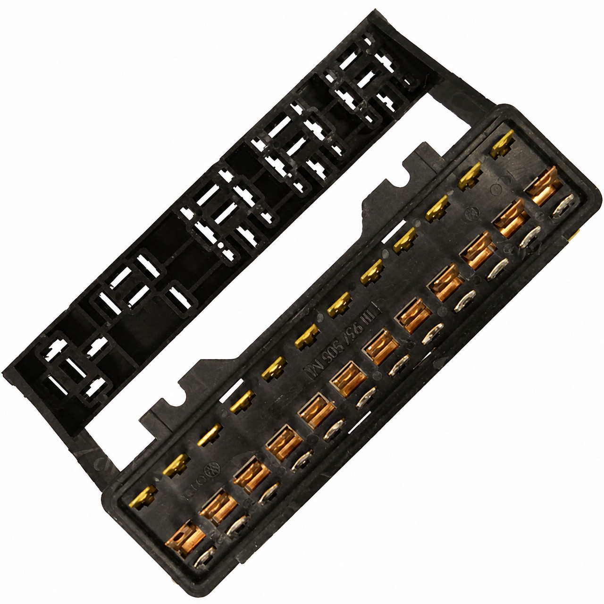
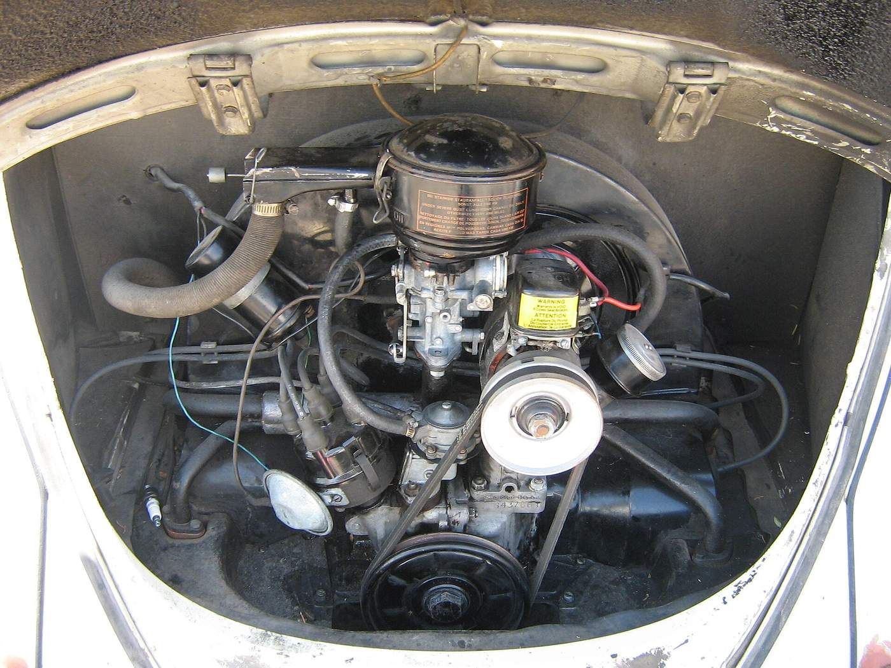

Heros Custom
Elétrica de clássico. Sem improvisação.
Não publicar — sem site até OK Founder — A.8 Commons + caixa 12 CIP1 + caixa 8 appletreeauto 61–66 (Acervo)
Curso inicial elétrica simples (N0)
Ensino Type 1 (Camada A). Execução no veículo só com Passaporte tipado (Camada B = esqueleto vazio neste PDF). Critério grátis · procedimento pago. Sem preço. Sem OS viva.
- 12 V no Brasil
- 1968 (não 1967)
- 12 V ≠ alternador
- Dínamo 12 V + regulador é caminho BR comum
- Fim de linha BR
- 1996 (2003 é México)
- 1º nacional
- 03/01/1959
- Planta Anchieta
- 18/11/1959
- Plataforma deste PDF
- Type 1 só
1. Para quem — e o que isto não é
Para quem
- Dono de Type 1 BR e auxiliar de box que ainda não crimpa chicote.
- Objetivo: não queimar o carro e saber o que medir antes de pedir OS.
- Critério visual + perguntas + quiz. Sem carro tipado nesta camada.
O que isto não é
- Não é o M1 chicote (U1–U8 / crimp / malha).
- Não são os 9 procedimentos de bancada (Biblioteca / oficina — não produto).
- Hércules = método de oficina (T0–T2), não o nome deste curso.
- Não é diagrama de um carro, nem Passaporte de cliente, nem OS.
- Outra plataforma (Type 3) = outro módulo. Não colar diagrama Type 1 nela.
Padrão Heros: ano antes da cor do fio; tensão medida, não “parece 12 V”; foto da caixa; massa antes de acusar componente; sem torção+fita; evidência (foto + valor) se for para OS. Bitola e fusível típico ficam no U2 (M1) — não neste N0.
2. Seis aulas (índice N0)
Índice canônico. Conteúdo = ementa N0 (“o aluno sai sabendo”). Aula não fecha sem as 3 perguntas de §4.
-
Energia zero e polaridade
Negativo primeiro. Tensão zero no ponto. Não improvisar carga/partida.
-
Ano + 6/12 V (1968)
Medir. 12 V = 1968. 1300/1967 ainda pode ser 6 V. Lâmpada e bobina não misturam. Fonte primária: D1 Pista C (Cap. 1 §5 = rascunho, não pré-requisito).
-
12 V ≠ alternador
Dínamo 12 V + regulador é caminho BR comum. Conversão 6→12 e dínamo→alternador são OS diferentes.
-
Diagrama do ano + foto da caixa
Diagrama do ano do veículo. Foto da caixa. 8 vs 12 pólos = o que se vê (sem inventar boletim). Proibido um PDF 67–81 genérico.
-
Massas primeiro
Retorno ~0 V. Metal limpo. Sem massa, o resto mente.
-
Multímetro parado
V e continuidade no carro parado. Sem cheiro de queimado. Sem ponte perigosa.
3. Perguntas de fechamento A1–A6
Texto N0 §9, sem parafrase. Aula não fecha sem as 3 certas. Critério = resposta correta + evidência quando a aula pedir foto ou medida.
A1 · Energia zero
- O que faz primeiro no negativo?
- Como sabe energia zero no ponto?
- O que não improvisar (carga/partida)?
A2 · 6 V / 12 V (1968)
- Como medís parado?
- O que é 1968 no BR?
- 1967 BR sem medir — o que fazés?
A3 · 12 V ≠ alternador
- 12 V sem ser alternador?
- As duas OS?
- O que recusa num kit YT?
A4 · Diagrama + caixa
- O que pedís antes do diagrama?
- O que a foto decide?
- Sem foto?
A5 · Massas
- O que medís numa massa boa?
- Antes de acusar peça?
- O que fica fora?
A6 · Multímetro parado
- O que medís parado?
- Quando paras?
- O que o N0 fecha / o que fica fora?
4. §10 Feedback — critério grátis vs M1
Número, bitola, crimp, rebuild e Ω completo = M1 / Biblioteca. Não são este curso.
| Aula | Critério grátis (N0) | Número / procedimento = M1 (fora) |
|---|---|---|
| 1 | Negativo primeiro · tensão zero no ponto · sem ponte | Bitola de cabo · crimp |
| 2 | Medir · 1968 · não misturar lâmpada/bobina | Ω da bobina · PN |
| 3 | 12 V ≠ alternador · duas OS | Rebuild / polarização (Biblioteca) |
| 4 | Diagrama do ano · foto caixa · o que se vê | Boletim inventado · bitola/fusível típico (U2) |
| 5 | Massa antes de acusar peça · retorno ~0 V (ideia) | Ω completo · terminal spec |
| 6 | V + continuidade parado · sem cheiro · sem ponte | Ensaio dinâmico · carga em marcha completa |
Ordem no carro (D1): energia zero → ano/tensão → geração → foto caixa → massa → V parado
Visual obrigatório: dínamo vs alternador (aula 3) · caixa 8/12 (aula 4). §8 A.8 geração = Commons; caixa 12 = CIP1 505M; caixa 8 = appletreeauto 61–66 (Acervo).
Mito × correção
| Mito | Correção Heros |
|---|---|
| 12 V = 1967 | 1968 no BR |
| 12 V = alternador | Dínamo 12 V comum · duas OS |
| Um PDF 67–81 | Diagrama do ano + foto da caixa |
| 1983 = fim / 2003 = fim BR | Nome oficial 1983 · fim BR 1996 · MX 2003 |
5. Quiz D1
fonte Notion Quiz D1 — gabarito na página editorial. 10 questões copiadas do cânon editorial (sem inventar).
-
No Fusca BR de produção, o vigia oval é típico do 1º nacional 1959?
- A) Sim, todo 1959 BR é oval
- B) Não — nacional típico já nasce com vigia retangular
- C) Só Itamar é retangular
-
A virada oficial Heros de 6 V → 12 V no Fusca BR é em qual ano?
- A) 1967 (calendário US)
- B) 1968
- C) 1970 (Fuscão)
-
“12 V” no carro significa automaticamente alternador?
- A) Sim
- B) Não — dínamo 12 V + regulador é caminho BR comum
- C) Só se a bateria for nova
-
Antes de fechar diagrama ou valor de OS elétrica, o que é obrigatório?
- A) Só o ano do CRLV
- B) Tensão medida + foto da caixa (e o que mais a D1/Pista C pede)
- C) Só a cor do chicote
-
Um 1300 modelo 1967 no BR ainda pode ser 6 V?
- A) Não, todo 1300 já é 12 V
- B) Sim — 1300/1967 ainda pode ser 6 V; 12 V = 1968
- C) Só se for importado
-
Lanterna “Fafá” (grandes redondas) reforça qual faixa típica?
- A) 1959–66
- B) 1979–86 e Itamar 93–96
- C) Só 1970–74
-
Fim da linha Fusca no Brasil é:
- A) 2003 (México)
- B) 1996
- C) 1986 (e nunca voltou)
-
Motor 1600 num visual de carroceria anos 60 — o que fazer?
- A) Datá-lo só pelo motor
- B) Marcar eras diferentes: carroceria/doc pra era do carro; motor = grupo propulsor atual
- C) Ignorar o motor
-
8 vs 12 pólos na caixa: como o Heros decide?
- A) Sempre 12 a partir de 1968
- B) Pelo que a foto mostra (sem inventar boletim)
- C) Pelo anúncio da peça aftermarket
-
1º Fusca com peças nacionais / inauguração Anchieta:
- A) 20/01/1959 e 1957
- B) 03/01/1959 e 18/11/1959
- C) 23/03/1953 (fundação) = 1º Sedan
Critério de domínio
≥ 8/10 corretas e (se for box) foto da caixa + tensão medida anotadas na ficha D1.
6. Checklist de saída (N0) 1–7
Versão N0 — item 6 é ~0 V / metal limpo, não Ω completo de M1. Sem 1–4: não fecha valor de elétrica.
- ☐ Ano do veículo (não só CRLV).
- ☐ Tensão medida (6 / 12 / mista).
- ☐ Foto da caixa de fusíveis.
- ☐ Foto dínamo ou alternador.
- ☐ Foto do prefixo no bloco (se for olhar motor).
- ☐ Massas principais: retorno ~0 V / metal limpo (critério N0) — não Ω completo de M1.
- ☐ (Motor) tinware / correia / vazamento — fora do N0 elétrico; não orçar motor sem isso.
7. Sistêmicos elétricos E1–E3
Só elétrica. Não misturar superaquecimento / tinware no PDF de Aprendiz (outro ofício).
| # | Sistêmico | Sintoma de rua | Onde o N0 toca |
|---|---|---|---|
| E1 | Massa · chicote · soquete | Luz fraca, painel louco, fusível “sem motivo” | Aulas 5–6 (critério) |
| E2 | 6 V / 12 V misturado | Bobina queima, lâmpada estoura | Aulas 2–3 |
| E3 | Carga (dínamo vs alternador) | Bateria mora, luz acesa | Aula 3 (duas OS) |
8. Fotos-modelo
Sem foto de cliente. Sem stock. Sem render. Sem IA. A.8 geração (dínamo ou alternador) = tipada Commons. Caixa 12 pólos = tipada CIP1 111 937 505 M. Caixa 8 pólos = tipada appletreeauto 61–66 (Acervo) (não CIP1).
caixa 8 pólos
appletreeauto 61–66

caixa 12 pólos
CIP1 · 505 M

dínamo vs alternador
Commons · A.8

9. Fichas-histórico (didáticas · anonimizadas)
Acervo EDI- · Type 1 só · sem foto · sem cliente · sem placa. Cada ficha é exercício de critério, não Passaporte. Slots de foto = AUSENTE. Não inventar boletim.
ID N0-H1 · nível 1
H1 · Era B1 (1959–66)
| Campo | Facto (didático · anonimizado) |
|---|---|
| ID | N0-H1 |
| Era | B1 1959–66 |
| Motor | 1200 / código B (slot AUSENTE) |
| Tensão | 6 V medida |
| Caixa | pré-12 pólos / foto (slot 8 AUSENTE) |
| Geração | dínamo 6 V (slot AUSENTE) |
| Carroceria | Vigia retangular nacional |
| Risco | E2 se misturar 12 V |
☐ Aluno
- ☐ Ano/era
- ☐ V medida
- ☐ Foto caixa
- ☐ Foto gerador
Selo domínio: 4 ☐ + não misturar 12 V neste carro.
ID N0-H2 · nível 2
H2 · Era B2 (1967–69)
| Campo | Facto (didático · anonimizado) |
|---|---|
| ID | N0-H2 |
| Era | B2 1967–69 |
| Motor | 1300 / BF (1967 ainda pode 6 V) |
| Tensão | medir 6 ou 12 se ≥1968 |
| Caixa | foto 8 vs 12 sem inventar boletim (AUSENTE) |
| Geração | dínamo 12 V comum se 12 V ≠ alt automático |
| Armadilha | “12 V=1967” recusar · cânon 1968 |
| Risco | E2 / E3 |
☐ Aluno
- ☐ Mediu V
- ☐ Ano ≠ só CRLV
- ☐ Foto caixa
- ☐ Dínamo ou alt
Selo domínio: 4 ☐ + explica por que 1967 ≠ 12 V automático.
ID N0-H3 · nível 3
H3 · Era B4 (1975–86)
| Campo | Facto (didático · anonimizado) |
|---|---|
| ID | N0-H3 |
| Era | B4 1975–86 |
| Motor | 1600 BB (prefixo slot AUSENTE) |
| Tensão | 12 V medida |
| Caixa | hipótese ≥1975 = 12 pólos só se foto confirmar (AUSENTE) |
| Geração | dínamo ou alt — duas OS |
| Carroceria | Fafá possível 79–86 — não data sozinha |
| Risco | E1 / E3 |
☐ Aluno
- ☐ 12 V medido
- ☐ Foto caixa 12
- ☐ Foto gerador
- ☐ Massa ~0 V N0
Selo domínio: 4 ☐ + não pede dínamo→alt como se fosse 6→12.
10. Próximo
Próximo: M1 chicote — ou agendar diagnóstico
Camada B
Só com Passaporte tipado
Sem capa tipada (ano · tensão medida · foto caixa · foto gerador) = não montar Camada B para aquele carro. Este PDF leva só o esqueleto. Sem carro. Sem diagrama genérico.
B.1 Capa do carro (campos vazios)
Type 1 só. Campos = template. Nada preenchido.
- Ano do veículo
- Passaporte / tipagem — não só CRLV
- Tensão medida
- 6 / 12 / mista — vazio
- Foto caixa
- 8 vs 12 = o que se vê — AUSENTE
- Foto gerador
- Dínamo ou alternador — AUSENTE
- Plataforma
- Type 1 só — outra plataforma = outro módulo
- Gate
- Vazio até Passaporte tipado
B.2 Unifilar do ano
B.3 Bitolas U2 — só M1
Só o trecho que a capa / laudo pedir. Fonte: Módulo Chicote U2 / Guia Bitolas. Não é conteúdo de Camada A / N0. Nada copiado aqui.
B.4 Blueprint do trecho
Só o circuito em jogo — não o chicote inteiro sem laudo. Sem SKU. Sem preço.
B.5 E1 / E2 / E3 (marcar só com evidência)
Ω completo = M1 — fora do critério N0 da Camada A. Sem evidência = sem marca.
B.6 O que pedir na OS (sem abrir OS)
- Pedir diagnóstico elétrico escrito com evidência (foto + valor medido).
- Pedir evidência fotográfica de entrada antes de peça.
- Não pedir upgrade dínamo → alternador como se fosse conversão 6 → 12 V.
- Sem número de OS viva. Sem placa. Sem abrir OS neste PDF.